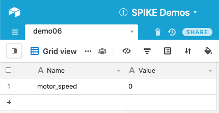
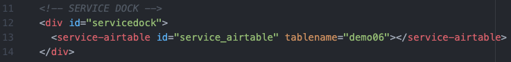
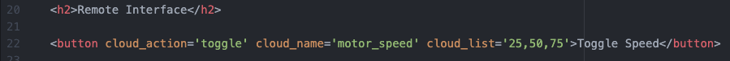
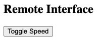
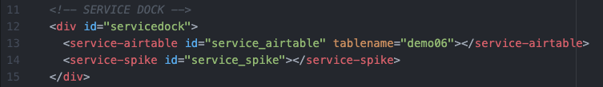
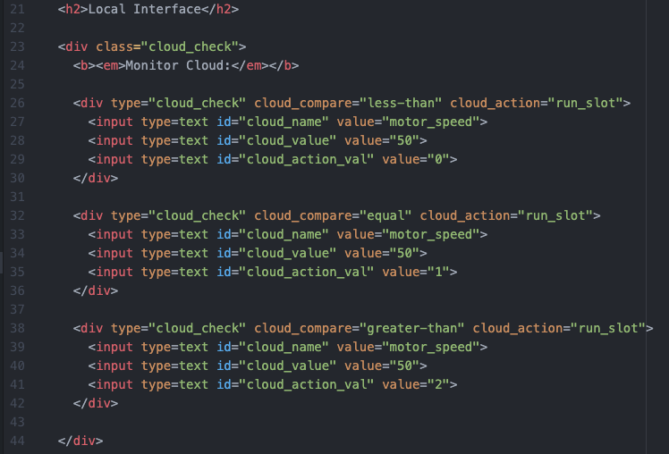
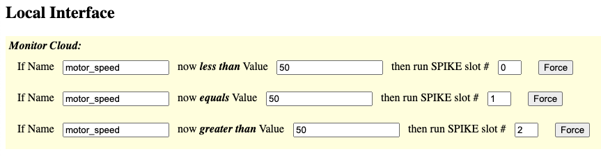

This demo shows how to use a button to toggle through a sequence of values.
Be sure to view the overall Documentation for configuring the cloud storage (API key, Base ID, etc) and for more information on how the entire system works.
The "Name" column has an entry "motor_speed" that will hold the updated values from the Toggle Button. The "Value" will be a number used to control the motor.

Service Dock
The remote page has the Airtable Service Dock element. Make sure to update the tablename attribute to match your table name.
Remote Interface
This button has cloud_action of "toggle" and includes a cloud_list of values: clicking the button will iterate through the list and set the cloud value to be each item in the list, in sequence, with each button click.
This is how the toggle button will look on the Remote Page:

Service Dock
The local page has both the Airtable Service Dock element (make sure to update the tablename attribute to match your table name). There is also a single SPIKE Prime Service Dock element.
Local Interface
The local interface is set up to monitor the "motor_speed" value. In this case there are three scenarios: when the motor speed is low (less than 50), when it equals 50, and when it is high (greater than 50). In each case a different SPIKE Prime slot is run.
Note there could have been other ways to accomplish this. It could have also been done with a single element that "looks for any change" and replaces code with whatever value it finds.
This is how the elements will look on the Local Page:

Example Code for SPIKE Prime Hub Slot #0:
# MicroPython for LEGO Hardware (LEGO Education's SPIKE Prime) from spike import PrimeHub, Motor from spike.control import wait_for_seconds # motor connected to A: my_motor = Motor('A') my_motor.start(25) # slow wait_for_seconds(2) my_motor.stop()Example Code for SPIKE Prime Hub Slot #1:
# MicroPython for LEGO Hardware (LEGO Education's SPIKE Prime) from spike import PrimeHub, Motor from spike.control import wait_for_seconds # motor connected to A: my_motor = Motor('A') my_motor.start(50) # medium wait_for_seconds(2) my_motor.stop()Example Code for SPIKE Prime Hub Slot #2:
# MicroPython for LEGO Hardware (LEGO Education's SPIKE Prime) from spike import PrimeHub, Motor from spike.control import wait_for_seconds # motor connected to A: my_motor = Motor('A') my_motor.start(75) # fast wait_for_seconds(2) my_motor.stop()